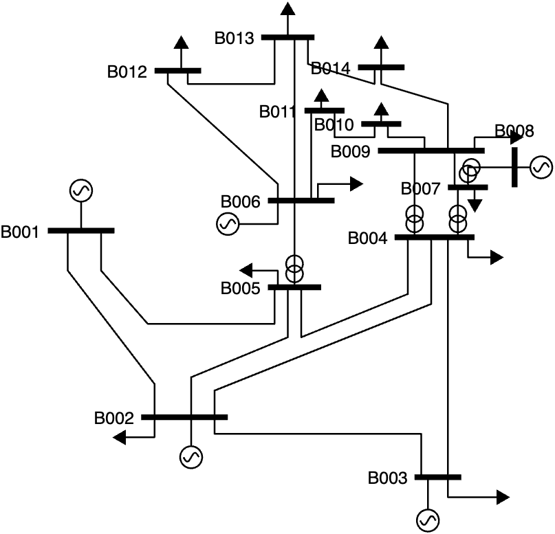
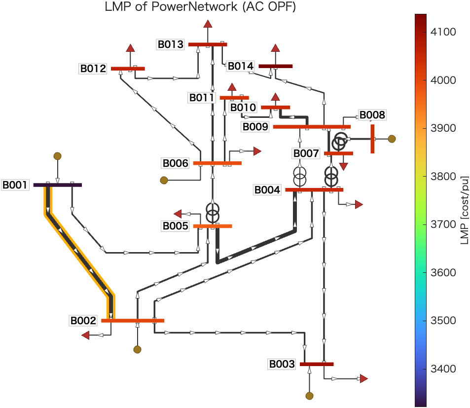
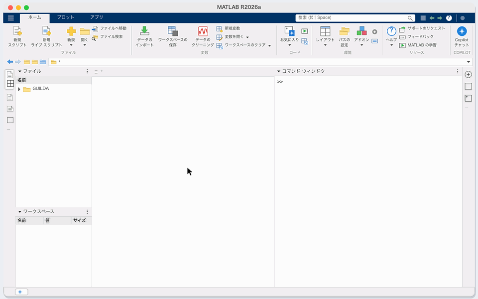
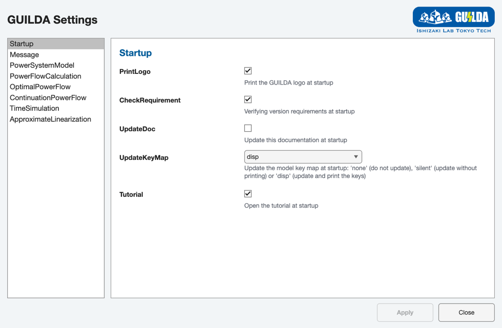
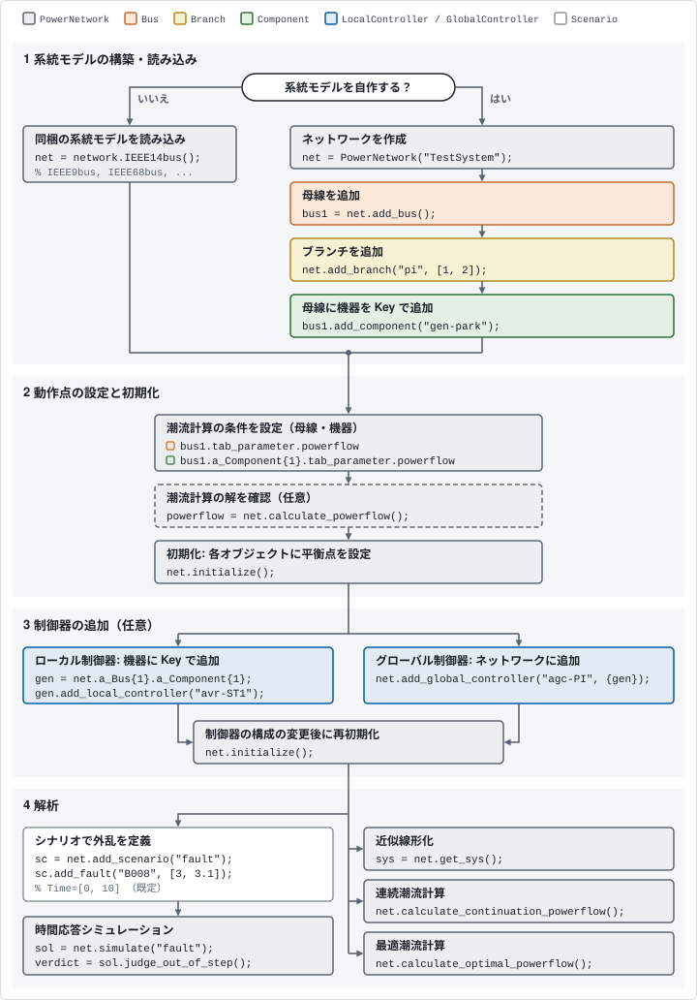
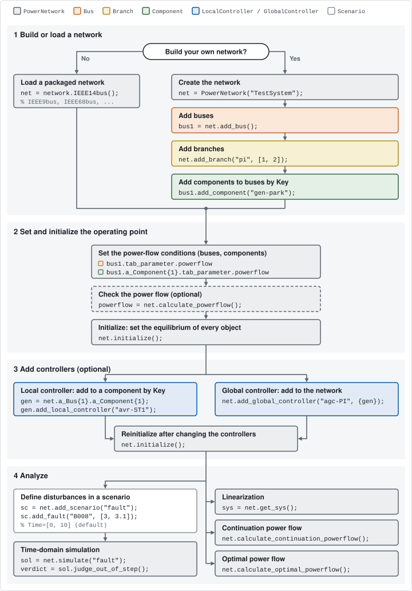

GUILDA DocumentationGUILDA ドキュメント
Grid & Utility Infrastructure Linkage Dynamics Analyzer
A MATLAB power-system simulator for students and researchers in systems and control. Combine blocks into models, then analyse and share them.
システム制御を学ぶ学生や研究者に向けた、MATLAB で動く電力系統シミュレータです。部品を組み合わせてモデルを作り、解析したり共有したりできます。
Supported Analyses対応する解析
-
RMS phasor models実効値フェーザモデル
Three-phase balanced networks in the RMS phasor representation: voltages and currents are complex phasors of their RMS values at the fundamental frequency, the network is a set of algebraic equations, and the dynamics are those of the generators, loads and controllers.
三相平衡の電力系統を、実効値（RMS）のフェーザで表します。電圧と電流は基本周波数の複素フェーザとして扱い、送電網は代数方程式で表します。動的な振る舞いは、発電機、負荷、制御器のモデルが受け持ちます。
Load a standard model, such as the IEEE 9-, 14-, 39- and 68-bus test systems or the IEEJ EAST10, EAST30, WEST10 and WEST30 standard models, or build a network of your own configuration from buses, branches and components.
IEEE 9 母線系統、14 母線系統、39 母線系統、68 母線系統や、電気学会の EAST10/EAST30/WEST10/WEST30 系統モデルを、すぐに読み込めます。母線、ブランチ、機器を自分で組み合わせて、独自の構成の系統を作ることもできます。
-
Time-domain simulation時間応答シミュレーション
Responses to faults, load and input changes, and initial-value perturbations.地絡や負荷・入力の変化、初期値の摂動に対して、系統がどう応答するかを計算します。
-
Linear analysis線形解析
Linearize the network around an operating point into Eẋ = Ax + Bu, y = Cx + Du, and analyse small-signal stability from its eigenvalues. The matrices A, B, C, D and E come with the names of the states, inputs and outputs, so they can be used for further linear analyses such as kernel analysis.
動作点のまわりで系統を近似線形化し、Eẋ = Ax + Bu、y = Cx + Du の形のモデルを得ます。固有値を調べれば、定態安定性を評価できます。行列 A、B、C、D、E には状態・入力・出力の変数名が付いているので、カーネル解析など、ほかの線形解析にもそのまま使えます。
-
Continuation power flow連続潮流計算
Raise the loads of chosen buses step by step and trace the power-flow solution to draw the nose (PV) curve, then find the maximum loading point to assess voltage stability.
連続潮流計算で PV カーブ（ノーズカーブ）を描けます。選んだ母線の負荷を少しずつ増やしながら潮流解をたどるので、最大負荷点がわかり、電圧安定性の評価に使えます。
-
Optimal power flow最適潮流計算
General formulations of OPF problems on the same network.同じ系統モデルを使って、一般的な形で定式化した最適潮流計算問題を解けます。
-
Controller design from scriptsスクリプトによる制御器設計
Design controllers in MATLAB scripts, for example an LQR gain from the linear model, attach them as local or global controllers, then simulate or linearize the network to evaluate them.
制御器は MATLAB のスクリプトで設計できます。たとえば線形モデルから LQR のゲインを求め、ローカル制御器やグローバル制御器として系統に取り付けます。そのうえでシミュレーションや近似線形化を行い、効果を確かめます。
-
Graph & animationグラフとアニメーション
Network graphs whose node heights and colours follow the response.応答に合わせてノードの高さと色が変わる、系統のグラフを描けます。
Licenseライセンス
GUILDA is released under the MIT License. Details: the LICENSE file at the repository root.
GUILDA は MIT ライセンスで公開しています。詳細はリポジトリのルートにある LICENSE ファイルを参照してください。
Developers開発者
GUILDA is developed by the Ishizaki Laboratory, Institute of Science Tokyo. It continues power_simulator, developed by Takahiro Kawaguchi (Gunma University).
東京科学大学 石崎研究室が開発しています。前身は川口貴弘先生（群馬大学）が開発した power_simulator で、GUILDA はこれを引き継いでいます。
Books and articles書籍・記事
- T. Ishizaki, T. Kawaguchi and K. Kawabe,石崎孝幸・川口貴弘・河辺賢一 著、 「電力系統のシステム制御工学 – システム数理と MATLAB シミュレーション –」, Corona Publishing (in Japanese). The textbook explains power systems in the language of systems and control and uses GUILDA for its numerical examples.、コロナ社。 電力系統をシステム制御の言葉で解説した教科書です。数値例の計算に GUILDA を使っています。
- T. Nishino, T. Kawaguchi and T. Ishizaki, 「GUILDA：エネルギーナレッジマネジメントのはじめの一歩」, 計測と制御, Vol. 62, No. 9, pp. 559–563, 2023 (in Japanese).
- Introductory article紹介記事, 計測と制御, Vol. 62, No. 10 (in Japanese, PDF).
How to cite引用方法
To cite GUILDA in published work, give the GitHub repository with the version or commit you used and the date you accessed it, for example:
GUILDA を用いた成果を発表するときは、GitHub リポジトリを、使用したバージョンまたはコミットとアクセスした日付を添えて引用してください。たとえば次のように記載します。
GUILDA: Grid & Utility Infrastructure Linkage Dynamics Analyzer, https://github.com/guilda-dev/guilda (version/commit, accessed YYYY-MM-DD).About GUILDAGUILDA について
GUILDA (Grid & Utility Infrastructure Linkage Dynamics Analyzer) is a power-system simulator for MATLAB, made for students and researchers in systems and control. It is developed with the textbook 「電力系統のシステム制御工学」 (Systems Control Engineering of Power Systems, Corona Publishing, 2022), whose numerical examples are computed with GUILDA.
GUILDA（Grid & Utility Infrastructure Linkage Dynamics Analyzer）は、システム制御を学ぶ学生や研究者のための、MATLAB で動く電力系統シミュレータです。教科書「電力系統のシステム制御工学」（コロナ社、2022 年）と一緒に開発しており、教科書の数値例は GUILDA で計算しています。
The whole grid is a set of differential-algebraic equations with named states and inputs, so control methods apply to it directly.
系統全体を、状態と入力に名前の付いた微分代数方程式として扱うので、制御の手法をそのまま使えます。
Background開発の背景
Wind and solar plants, homes with rooftop PV, batteries and microgrids now connect to the grid, and many of them are controllable. Keeping the supply stable with them is a control problem. Power engineering and control engineering, however, expect different things from a simulator.
風力・太陽光発電所、太陽光パネル付きの住宅、蓄電池、マイクログリッドが系統につながり、その多くは制御できます。こうした系統で電力を安定に届けることは制御の問題です。ただし、電力工学と制御工学ではシミュレータに求めるものが違います。
Power-system and power-electronics tools電力系統・パワーエレクトロニクスの解析ツール
- Detailed models
- Fast computation
- Faithful reproduction of real events
- One module per device
- 精緻なモデル
- 高速な計算
- 現実の事象の忠実な再現
- 設備ごとのモジュール
Control engineering制御工学
- Models with only the essential dynamics
- Principles derived from the mathematical model
- 本質的な動特性だけを残したモデル
- 数理モデルから導く原理原則
A control researcher who turns to power systems therefore first spends a long time learning the power domain.
そのため、制御の研究者が電力系統に取り組むと、まず電力分野の知識の習得に時間がかかります。
Building a modelモデルの構成
As in most power-system simulators, a model is built by connecting objects. Buses, branches, generators, loads and controllers are classes, and methods such as add_bus, add_branch, add_component, add_local_controller and add_global_controller add them to a PowerNetwork, so a model takes only a few lines. GUILDA derives the admittance matrix, the equations of the whole system and the operating point.
多くの電力系統シミュレータと同じように、モデルはオブジェクトをつないで作ります。母線、ブランチ、発電機、負荷、制御器はそれぞれクラスで、add_bus、add_branch、add_component、add_local_controller、add_global_controller などのメソッドで PowerNetwork に追加するので、系統のモデルを簡潔に書けます。アドミタンス行列、系統全体の方程式、動作点は GUILDA が求めます。
Bundled networks can also be used as they are: network.IEEE9bus, IEEE14bus, IEEE39Bus and IEEE68bus, and the IEEJ standard models IEEJ_EAST10, IEEJ_EAST30, IEEJ_WEST10 and IEEJ_WEST30.
同梱の系統モデルも、そのまま使えます。network.IEEE9bus、IEEE14bus、IEEE39Bus、IEEE68bus と、電気学会の標準モデル IEEJ_EAST10、IEEJ_EAST30、IEEJ_WEST10、IEEJ_WEST30 があります。
% Build a two-bus network
net = PowerNetwork("TestSystem");
net.add_bus();
net.add_bus();
net.add_branch("pi", [1, 2]);
g = net.a_Bus{1}.add_component("gen-park");
net.a_Bus{2}.add_component("load-power");
net.a_Bus{1}.l_isSlack = true;
g.add_local_controller("avr-DC1"); % local controller
net.add_global_controller("agc-PI", {g}); % global controller
% Or use a bundled network as it is
net = network.IEEE68bus;On top of this usual way of building a model, GUILDA offers the analysis and visualization features below.
こうした一般的なモデルの作り方に加えて、GUILDA には次のような解析と可視化の特長があります。
Analysis features解析の特長
The linear model has named variables and can be taken apart by element, controllers are part of the network, and one network runs every analysis from optimal power flow to stability, down to linearizing each step of a continuation power flow.
線形モデルには変数名が付いていて要素ごとに分解でき、制御器もネットワークの一部として扱われます。また、最適潮流計算から安定性の解析まで、連続潮流計算の各ステップでの近似線形化も含めて、一つのネットワークで行えます。
Each slide is a MATLAB session: the commands under it are typed, their printed output follows, then the figures they draw. Running the commands gives the same output and figures.
各スライドは MATLAB での実行のようすです。下のコマンドを入力し、その出力に続いて描かれる図を示しています。同じコマンドを実行すると、同じ出力と図が得られます。
Visualization features可視化の特長
Every analysis has its own figures to convey the result. The plot_* methods return GraphBase objects: restyle them with set_style, play results with several time samples as animations, link figures and explore them interactively. Each slide shows the command that draws it.
どの解析にも、結果を伝えるための図が用意されています。plot_* メソッドは GraphBase のオブジェクトを返すので、set_style で見た目を変えたり、複数の時刻を持つ結果をアニメーションとして再生したり、図どうしをつないで対話的に調べたりできます。各スライドに、その図を描くコマンドを示しています。
-

A single-line diagram for a paper論文用の単線結線図
A black-and-white single-line diagram for a paper, drawn from a power flow result: generator, load and transformer symbols and bus names, sized for one column of a two-column paper (bus names in 6 pt).潮流計算の結果から、論文にそのまま使える白黒の単線結線図を描きます。発電機・負荷・変圧器の記号と母線名を、2 段組の 1 列幅に合わせて配置します（母線名は 6 pt）。res = network.IEEE14bus().calculate_powerflow(); G = res.plot_single_line_diagram(); exportgraphics(G.ax, "ieee14.png", Resolution=300); -
The network diagram after a fault地絡事故後のネットワーク図
A fault at bus B008 from 1 s to 1.05 s, played on the network diagram. Branch colours show the current, moving dots the direction and size of the active power, and the cursor of the |V| chart follows the time (slow motion during the fault).母線 B008 で 1 秒から 1.05 秒まで地絡事故が起きたときの応答を、ネットワーク図で再生しています。ブランチの色は電流、流れる点は有効電力の向きと大きさを表し、右のグラフのカーソルが時刻に追従します（事故中はスロー再生）。net = network.IEEE14bus(); sc = net.add_scenario("fault", Time=[0, 5]); sc.add_fault("B008", [1, 1.05]); res = net.simulate("fault"); [G, G_chart] = res.plot_diagram(); G.play(); % or drag the playback bar -

The time response時間応答の波形
The time response itself: the frequency deviation of the generators after a fault at bus B008 (IEEE 14-bus system).時間応答そのものも描けます。母線 B008 の事故の後の、発電機の周波数偏差です（IEEE 14 母線系統）。res = net.simulate("fault"); res.plot_trajectory(Quantity="omega"); -
A 3D spring-mass model3 次元のばね質点モデル
The swing of the generators after a fault, as a spring-mass picture on the surface z = log|V|. The nodes are voltage phasors, the springs are branches and reactances, and the chart is the frequency deviation omega of the generators.事故後の発電機の動揺を、曲面 z = log|V| の上のばね質点モデルとして動かしています。ノードは電圧フェーザ、ばねはブランチとリアクタンスで、右のグラフは発電機の角周波数偏差 omega です。net = network.IEEE9bus(); sc = net.add_scenario("fault", Time=[0, 5]); sc.add_fault("B007", [1, 1.05]); res = net.simulate("fault"); [G, G_chart] = res.plot_spring_model(Dimension=3); G.export_video("swing.mp4"); -
Continuation power flow step by step連続潮流計算のステップ再生
Each step of a continuation power flow, played on the network diagram and the linked PV curves. As the load grows the flows change, and the path passes the nose (maximum loading point) onto the lower branch.連続潮流計算の各ステップを、ネットワーク図と PV 曲線で同時に再生しています。負荷を増やすにつれて潮流が変わり、ノーズ（最大負荷点）を越えて下側の解へ進む様子が分かります。net = network.IEEE14bus(); net.initialize(); res = net.calculate_continuation_powerflow(LoadBus=["B009", "B014"]); [G, G_pv] = res.plot_diagram(); % the PV curves are linked G.animate(); -
Click an eigenvalue to see the participation固有値をクリックして参加率を見る
The IEEE 68-bus system is linearized and modes are clicked on the eigenvalue map on the left. The diagram on the right is recolored with the participation of each bus in that mode: many generators take part in the inter-area mode of 0.35 Hz, only the generator at bus B011 in the local mode of 1.63 Hz. A click on bus B014 then lists the participation of each of its states in the table below.IEEE 68 母線系統を近似線形化し、左の固有値の図でモードをクリックしています。右のネットワーク図の色が、そのモードへの各母線の参加率に変わります。0.35 Hz の地域間振動モードでは多くの発電機が関わり、1.63 Hz のローカルモードでは母線 B011 の発電機だけが関わります。最後に母線 B014 をクリックすると、下の表にその母線の状態ごとの参加率が出ます。net = network.IEEE68bus(); res = net.get_sys(); sct = res.plot_participation(); % click an eigenvalue, then a bus -

LMP of an optimal power flowOPF の LMP
The locational marginal price (LMP) of each bus from an AC optimal power flow, shown by colour. The branch at its capacity limit is highlighted, so you can see how congestion splits the prices.最適潮流計算（AC OPF）の結果から、各母線の地点別限界価格（LMP）を色で表しています。送電容量の上限に達したブランチが強調され、混雑によって価格が分かれる様子が分かります。net = network.IEEE14bus(); net.a_Branch{1}.tab_parameter.operation.Pmax = 1; res = net.calculate_optimal_powerflow(Method="AC OPF"); G = res.plot_lmp(LabelMode="bus"); -
Explore the result with the playback bar and clicks再生バーとクリックで結果を探る
Drag the playback bar to the moment of the fault and click buses: a few lines inElementClickedFcnselect the clicked bus both in the diagram and in the |V| chart.再生バーをドラッグして事故の瞬間に移動し、母線をクリックしています。ElementClickedFcnに書いた数行で、クリックした母線がネットワーク図と右の |V| のグラフの両方で選択されます。[G, G_chart] = res.plot_diagram(); G.ElementClickedFcn = @(G, d) select_bus(G, G_chart, d); function select_bus(G, G_chart, d) if d.Kind == "bus" G.clear_selection(); G.select(d.Tag); G_chart.clear_selection(); G_chart.select(d.Tag); end end -
The control panel and commandsコントロールパネルとコマンド
The panel ofshow_controlsswitches the colour, the bus colour, the 3D drawing and the bus height, and a command sets the marker size. The panel and the properties stay in step: a change from either one redraws the figure.show_controlsで出したパネルから、色、母線の色、3D 表示、母線の高さを切り替え、コマンドでマーカーの大きさを変えています。パネルとプロパティは常に同期しており、どちらで変えても図が更新されます。res = network.IEEE39Bus().calculate_powerflow(); G = res.plot_diagram(); G.show_controls(); G.ColorMode = "P"; G.BusColorMode = "V"; G.MarkerSizeMode = "S"; G.Dimension = "3D"; G.BusHeightMode = "V"; -
Edit and analyse in the GUIGUI で編集して解析する
The GUILDA app opens the IEEE 14-bus system; the load at bus B009 is clicked on the network diagram and its active power P is changed from -0.295 to -0.6 in the model GUI. The Power flow tab then runs the power flow, and Analyze result opens the result window. Every action is kept as MATLAB code in the log below, and Export script writes it out as a script.GUILDA のアプリで IEEE 14 母線系統を開き、ネットワーク図で母線 B009 の負荷をクリックして、モデルの GUI で有効電力 P を -0.295 から -0.6 に書き換えています。続けて Power flow のタブで潮流計算を実行し、Analyze result で結果の窓を開いています。操作はすべて MATLAB のコードとして下のログに残り、Export script でスクリプトに書き出せます。h = GUILDA.launch_gui(network.IEEE14bus()); % the log of the session: net.a_Bus{9}.a_Component{1}.tab_parameter.powerflow.P = -0.6; [res_pf, flag_pf] = net.calculate_powerflow();
Other figures include the PV curves of a continuation power flow on their own and the dispatch of an optimal power flow as bar charts.
ほかに、連続潮流計算の PV 曲線だけの図や、最適潮流計算の出力配分の棒グラフも描けます。
Sharing research knowledge研究の知識の共有
Research know-how tends to stay with one person and is lost when that person leaves. GUILDA aims to turn it into programs, explicit knowledge that others can reuse and build on.
研究のノウハウは個人にとどまりやすく、その人が離れると失われがちです。GUILDA は、こうした暗黙知をプログラムという形式知にして共有し、ほかの人がその上に研究を積み重ねられるようにすることを目指しています。
The idea follows the SECI model of Ikujiro Nonaka, in which tacit and explicit knowledge convert into each other in four steps.
この考え方は野中郁次郎の SECI モデルに基づきます。SECI モデルでは、暗黙知と形式知が四つの段階で互いに変換されます。
- Socialization: members share experience and progress in meetings.
- Externalization: what they learned is written as models and analyses with clear interfaces.
- Combination: these are combined on the platform into new analyses.
- Internalization: researchers use the platform in their own work and gain new insight.
- 共同化：ミーティングで経験や進み具合を共有します。
- 表出化：学んだことを、インタフェースの明確なモデルや解析として書きます。
- 連結化：それらをプラットフォーム上で組み合わせ、新しい解析を作ります。
- 内面化：プラットフォームを自分の研究に使い、新しい知見を得ます。
Each turn of the cycle is meant to leave reusable models and analyses, so that the knowledge does not depend on particular people. The name GUILDA comes from guild: researchers and engineers who learn from one another and build things together.
サイクルを回すたびに再利用できるモデルや解析が残り、知識が個人に依存しなくなることを目指しています。GUILDA の名前は、学び合いながら一緒にものを作る研究者や技術者の集まりをギルドになぞらえたものです。
Comparison with other tools他のツールとの比較
| Analysis解析の種類 | Typical analysis package一般的な解析パッケージ | GUILDA |
|---|---|---|
| Power flow潮流計算 | ✓ | ✓ |
| Small-signal stability via linearization近似線形化による小信号安定度 | ✓ | ✓ |
| Time-domain (transient) response時間応答（過渡応答） | ✓ | ✓ |
| Interfaces for control engineering制御工学向けのインタフェース | Limited限定的 | Core focus中心的な目標 |
Getting Startedはじめに
Install GUILDAGUILDA のインストール
Clone or download the repository from GitHub, or open it directly in MATLAB Online.
GitHub からリポジトリをクローンするか、ダウンロードしてください。MATLAB Online で直接開くこともできます。

Requirements動作環境
GUILDA runs on MATLAB alone; each toolbox is needed only by the features marked below.
GUILDA は MATLAB だけで動きます。Toolbox が必要になるのは、下の表で印の付いた機能を使うときだけです。
| Feature機能 | MATLABR2025a or laterR2025a 以降 | Optimization Toolbox | Control System Toolbox | Symbolic Math Toolbox |
|---|---|---|---|---|
Power flow潮流計算Steady-state voltages and power flows定常状態の電圧・電力潮流net. | ||||
Newton-Raphson method (default)ニュートン・ラフソン法（既定）Solver="newton" | ✓ | – | – | – |
Gradient method勾配法Solver="gradient" | ✓ | – | – | – |
Levenberg-Marquardt methodレーベンバーグ・マーカート法Solver= | ✓ | – | – | – |
Virtual bus dynamics (time integration)仮想母線ダイナミクス（時間積分）Solver="dynamic" | ✓ | – | – | – |
MATLAB fsolveMATLAB の fsolveSolver="fsolve" | ✓ | ✓ | – | – |
Continuation power flow (CPF)連続潮流計算（CPF）Voltage stability: the nose (PV) curve電圧安定性・PV 曲線net. | ✓ | – | – | – |
Optimal power flow (OPF)最適潮流計算（OPF）Generation dispatch that minimizes cost under constraints制約下でコスト最小の発電配分net., net.initialize( | ✓ | ✓ | – | – |
Time simulation時間応答シミュレーションResponse to faults and disturbances事故・外乱に対する時間応答net.simulate | ✓ | – | – | – |
Linearization近似線形化Linear model around an operating point (eigenvalues, controller design)動作点まわりの線形モデル（固有値解析・制御器設計）net., ResultLIN. | ||||
Result object with system matrices (default)システム行列を持つ結果オブジェクト（既定）Format="GUILDAorigin" | ✓ | – | – | – |
Plain MATLAB struct of matrices行列の構造体Format="struct" | ✓ | – | – | – |
Control System Toolbox state-space model (ss)Control System Toolbox の状態空間モデル（ss）Format="ss" | ✓ | – | ✓ | – |
| Controllers制御器Controllers bundled with GUILDAGUILDA 同梱の制御器 | ||||
LQR (optimal state-feedback) controllersLQR（最適状態フィードバック）制御器controller., controller. | ✓ | – | ✓ | – |
| Developer tools開発者向けFor writing and checking modelsモデルの作成・検証用 | ||||
Symbolic equations in the Newton-Raphson solverニュートン・ラフソン法ソルバーでの記号式Method (Fcn) | ✓ | – | – | ✓ |
Validation scripts for hand-written Jacobians手書きのヤコビ行列の検証スクリプトvalidate.m (+component/, +controller) | ✓ | – | – | ✓ |
- ✓ required, – not needed.
GUILDAprints the same check at startup from@GUILDA/config/ListToolbox.json:okor the features unavailable without each toolbox.
- ✓ は必要、– は不要を表します。
GUILDAを起動したときにも、@GUILDA/config/ListToolbox.jsonをもとに同じ確認を行います。Toolbox ごとに、okか、その Toolbox がないと使えない機能を表示します。
Start GUILDAGUILDA の起動
Open the GUILDA repository folder in MATLAB and run the constructor at the start of each session.
MATLAB で GUILDA のリポジトリフォルダを開き、セッションの最初にコンストラクタを実行します。
>> cd path/to/guilda
>> GUILDA;
Startup tasks, as configured in Startup Settings:
起動すると、起動時の設定に従って次の処理を行います。
- Print the GUILDA logo.GUILDA のロゴを表示します。
- Add the required GUILDA folders to the MATLAB path (always performed).必要な GUILDA のフォルダを MATLAB のパスに追加します。この処理は常に行います。
- Check the MATLAB version and the toolboxes in the table above.MATLAB のバージョンと上表の Toolbox を確認します。
- Update the generated documentation database and class signature map when enabled.有効にしている場合は、自動生成するドキュメントのデータベースと、クラスのシグネチャマップを更新します。
- Display the update log and open the tutorial when enabled.有効にしている場合は、更新履歴を表示し、チュートリアルを開きます。
Next Step: the Tutorial次のステップ: チュートリアル
Continue from the tutorial Live Script that just opened (Main.mlx, Step 0): it is the table of contents of the Live Scripts in _GUILDAtutorial, with the usage manual (Steps 1–12) and the texts on the analyses (Parts 0–8). If you are new to GUILDA, start with Step 1. Close it by mistake? GUILDA.tutorial() opens it again. The Tutorial tab introduces what you can analyze with the Live Script of each Part, gives the basic workflow as plain code and lists Steps 1–12.
続きは、起動時に開いたチュートリアルの Live Script（Main.mlx、Step 0）から進めます。これは _GUILDAtutorial にある Live Script の目次で、使い方のマニュアル（Step 1〜12）と、解析を学ぶテキスト（Part 0〜8）を並べています。初めて使う人は Step 1 から読んでください。閉じてしまったときは GUILDA.tutorial() でもう一度開けます。チュートリアルタブでは、解析できることを Part ごとの Live Script とあわせて紹介し、基本的な流れのコードと、Step 1〜12 の一覧を見られます。
Optionsオプション
Not needed for a first run.
初めて使うときは設定しなくてかまいません。
Startup Settings起動時の設定
Change how GUILDA behaves at startup: the settings window turns the optional startup tasks above on or off. Path setup is required to use GUILDA and cannot be turned off.
GUILDA の起動時の動作は変更できます。設定ウィンドウで、上に挙げた起動時の処理をそれぞれ有効または無効にします。ただし、パスの設定は GUILDA を使うために欠かせないので、無効にはできません。
>> GUILDA.setting();The window lists the sections in this order: Startup, Message, PowerSystemModel, then the analyses (PowerFlowCalculation, OptimalPowerFlow, ContinuationPowerFlow, TimeSimulation, ApproximateLinearization).
ウィンドウには、Startup、Message、PowerSystemModel、各解析（PowerFlowCalculation、OptimalPowerFlow、ContinuationPowerFlow、TimeSimulation、ApproximateLinearization）の順にセクションが並びます。

Utility Functionsユーティリティ関数
>> GUILDA.pwd() % Get the GUILDA repository path
>> GUILDA.rmpath() % Remove GUILDA folders from the MATLAB path
>> GUILDA.addpath() % Add the required folders again
>> GUILDA.setting() % Open environment and startup settings
>> GUILDA.tutorial() % Open the tutorial
>> GUILDA.doc() % Open the class reference of your copy, with your own classes
>> GUILDA.dictionary() % Search the implemented class hierarchy
>> GUILDA.newclass() % Open the class creation tool (under development)_GUILDAtutorial, one feature per Step. The basic workflow, the hands-on Steps and reference material to look things up.
使い方のマニュアルです。_GUILDAtutorial の Live Script で、1 つの Step で 1 つの機能を扱います。基本的な流れ、ハンズオンの Step、調べものに使う参考資料があります。
Go to how to use GUILDAGUILDA の使い方へ
Understanding power systems電力系統を理解する
For readers who want to learn the basics of power system engineering; no prior knowledge of power systems is assumed. The analyses of power systems, one field per card, each tied to the power system engineering behind it. Each card opens the page of one Part, which explains the field with figures, and gives the command that opens the Live Script of the Part, which computes the same with GUILDA.
電力系統工学の基礎を学びたい人向けで、電力系統の予備知識は前提にしていません。電力系統の解析を分野ごとに、背景にある電力系統工学の知識と結びつけて紹介します。各カードから、その分野を図で説明する Part のページを開けます。各カードには、その内容を GUILDA で計算して確かめる、Part の Live Script を開くコマンドもあります。
How to use GUILDAGUILDA の使い方
For readers who want to learn to use GUILDA: a short overview of the basic workflow, then the hands-on Steps (Live Scripts in _GUILDAtutorial, one feature per Step) and reference material to look things up.
GUILDA の使い方を学びたい人向けです。基本的な流れを短く示したあと、ハンズオンの Step（_GUILDAtutorial の Live Script で、1 つの Step で 1 つの機能を扱います）と、調べものに使う参考資料を並べています。
Basic Workflow基本的な流れ
A typical analysis: load or build a network, then simulate it, linearize it or add controllers. The code below assumes GUILDA has been started as in Getting Started; each step is covered in detail by the hands-on Steps below.
典型的な解析では、系統モデルを読み込むか作ってから、時間応答シミュレーション、近似線形化、制御器の追加に進みます。以下のコードは、はじめにのとおりに GUILDA を起動してあるものとします。それぞれの手順は、下のハンズオンの Step で詳しく扱います。


Load a bundled network同梱の系統モデルを読み込む
For a quick analysis, load a packaged network.
手早く解析したいときは、同梱の系統モデルを読み込みます。
% Load a packaged test network (IEEE 14-bus, MATPOWER case14 data)
net = network.IEEE14bus;Build a network by hand系統モデルを自分で作る
Create a PowerNetwork, add buses, branches and components, and choose the slack bus (GUILDA never selects one).
PowerNetwork を作り、母線、ブランチ、機器を追加して、スラック母線を指定します（GUILDA はスラック母線を自動では選びません）。
% Minimal structure of a manually assembled network
net = PowerNetwork("TestSystem");
bus1 = net.add_bus();
bus2 = net.add_bus();
net.add_branch("pi", [1, 2]);
bus1.add_component("gen-park");
bus2.add_component("load-power");
bus1.l_isSlack = true;Run a time-domain simulation時間応答シミュレーションを実行する
Disturbances go in a Scenario created on the network with a tag; simulate it by that tag and plot the result.
外乱は、タグを付けてネットワークに作った Scenario に書きます。そのタグを指定してシミュレーションし、結果を描きます。
net = network.IEEE14bus;
sc = net.add_scenario("fault", Time=[0, 50]);
sc.add_fault("B008", [3, 3.1]); % ground fault from 3 s to 3.1 s
sc.add_open_branch("EL013", 3.1); % then a line opened until the end
sol = net.simulate("fault"); % the Time of the scenario
sol.plot_trajectory(Quantity="omega"); % frequency deviation of the generatorsHands-on Tutorialハンズオンチュートリアル
The usage manual: Live Scripts in the _GUILDAtutorial folder that cover the features of GUILDA, one Step per feature, in reading order. If you are new to GUILDA, start with Step 1. Each one builds or loads its own network first, so any of them can be opened on its own. Run the command beside each one in MATLAB with the GUILDA folder as the current folder (cd(GUILDA.pwd)).
使い方のマニュアルです。_GUILDAtutorial フォルダにある Live Script で、GUILDA の機能を 1 つの Step に 1 つずつ、読む順に並べました。初めて使う人は Step 1 から読んでください。どれも系統モデルを作るか読み込むところから始まるので、1 本だけ開いても進められます。MATLAB で、GUILDA のフォルダを現在のフォルダーにして（cd(GUILDA.pwd)）、各項目のコマンドを実行すると開きます。
Reference Material参考資料
Live Scripts in _GUILDAtutorial to look things up while you work.
作業しながら調べるときに使う、_GUILDAtutorial の Live Script です。